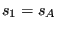

Keyword type: step
This option allows concentrated forces to be applied to any node inthe model which is not fixed by a single or multiple pointconstraint. Optional parameters are OP, AMPLITUDE, TIME DELAY, USER, LOAD CASE,SECTOR, SUBMODEL, STEP, DATA SET and OMEGA0. OP can take thevalue NEW or MOD. OP=MOD is default and implies that the concentratedloads applied to different nodes in previous steps are kept. Specifying a force in a node for which aforce was defined in a previous step replaces this value. A force specified ina node and direction for which a force was already defined within the same step is added tothis value. OP=NEWimplies that all concentrated loads applied in previous steps are removed. Ifmultiple *CLOAD cards are present in a step this parameter takes effect for the first *CLOAD card only.
The AMPLITUDE parameter allows for the specification of an amplitude by whichthe force values are scaled (mainly used for nonlinear static and dynamiccalculations). Thus, in that case the values entered on the *CLOAD card areinterpreted as reference values to be multiplied with the (time dependent)amplitude value to obtain the actual value. At the end of the step thereference value is replaced by the actual value at that time. In subsequentsteps this value is kept constant unless it is explicitly redefined or theamplitude is defined using TIME=TOTAL TIME in which case the amplitude keepsits validity.
The AMPLITUDE parameter applies to all loads specified by the same *CLOADcard. This means that, by using several *CLOAD cards, different amplitudes canbe applied to the forces in different coordinate directions in one and thesame node. An important exception to this rule are nodes in which atransformation applies (by using the *TRANSFORM card): anamplitude defined for such a node applies to ALL coordinate directions. Ifseveral are defined, the last one applies.
The TIME DELAY parameter modifies the AMPLITUDE parameter. As such, TIME DELAYmust be preceded by an AMPLITUDE name. TIME DELAY is a time shift by which theAMPLITUDE definition it refers to is moved in positive time direction. Forinstance, a TIME DELAY of 10 means that for time t the amplitude is takenwhich applies to time t-10. The TIME DELAY parameter must only appear once onone and the same keyword card.
If the USER parameter is selected the concentrated load values are determined bycalling the user subroutine cload.f, whichmust be provided by the user. This applies to all nodes listedbeneath the *CLOAD keyword. Any load values specified following thedegree of freedom are not taken into account. If the USER parameter is selected,the AMPLITUDE parameter has no effect and should not be used.
The LOAD CASE parameter is only active in *STEADY STATEDYNAMICS calculations. LOAD CASE = 1 means that theloading is real or in-phase. LOAD CASE = 2 indicates that the load isimaginary or equivalently phase-shifted by . Default is LOAD CASE =1.
The SECTOR parameter can only be used in *MODALDYNAMIC and *STEADY STATEDYNAMICS calculations with cyclic symmetry. The datumsector (the sector which is modeled) is sector 1. The other sectors arenumbered in increasing order in the rotational direction going from the slavesurface to the master surface as specified by the *TIEcard. Consequently, the SECTOR parameters allows to apply a point load to anynode in any sector. However, the only coordinate systems allowed in a node in which a force is applied in a sectordifferent from the datum sector are restricted to the global Carthesian system and a localcylindrical system. If the global coordinate system applies, the force defined by the user(in the global system) is simply copied to the appropriate sector withoutchanging its direction. The user must make sure the direction of the force isthe one needed in the destination sector. If a local cylindrical systemapplies, this system must be identical with the one defined underneath the*CYCLIC SYMMETRY MODEL card. In that case, theforce defined in the datum sector is rotated towards the destination sector,i.e. the radial, circumferential and axial part of the force is kept.
The SUBMODEL parameter specifies that the forces in the specified degrees offreedom of the nodeslisted underneath will be obtained by interpolation from a global model. Tothis end these nodes have to be part of a*SUBMODEL,TYPE=NODE card. On the latter card the resultfile (frd file) of the global model is defined. The use of the SUBMODELparameter requires the STEP or the DATA SET parameter.
In case the globalcalculation was a *STATIC calculation the STEP parameter specifies the step in the global modelwhich will be used for the interpolation. If results for more than oneincrement within the step are stored, the last increment is taken.
In case the global calculation was a *FREQUENCY calculation the DATA SET parameterspecifies the mode in the global model which will be used for theinterpolation. It is the number preceding the string MODAL in the .frd-fileand it corresponds to the dataset number if viewing the .frd-file withCalculiX GraphiX. Notice that the global frequency calculation is not allowedto contain preloading nor cyclic symmetry.
Notice that the forcesinterpolated fromthe global model are not transformed, no matter what coordinate system isapplied to the nodes in the submodel. Consequently, if the forces of the global modelare stored in a local coordinate system, this local system also applies to thesubmodel nodes in which these forces are interpolated. So the submodel nodes in which the forces of the global model areinterpolated, inherit the coordinate system in which the forces of theglobal model were stored. The SUBMODEL parameter and the AMPLITUDE parameterare mutually exclusive.
Notice that the interpolation of the forces from a global model onto asubmodel is only correct if the global and submodel mesh coincide. Else, forceequilibrium is violated. Therefore, the option to interpolate forces onsubmodels only makes sense if it is preceded by a submodel calculation (thesame submodel) withdisplacement interpolation and force output request. Summarizing, in order tocreate a force-driven calculation of a submodel, knowing the displacementresults in the global model one would proceed as follows:
Applications of this technique include force-driven fracture mechanics calculations.
Finally, the OMEGA0 parameter (notice that the last character is the numberzero, not the letter O) specifies the value of  in a*GREEN step. It is a required parameter in a *GREEN step.
in a*GREEN step. It is a required parameter in a *GREEN step.
If more than one *CLOAD card occurs within the input deck the following rules apply:
If a *CLOAD card is applied to the same node AND in the same direction as in aprevious application, then
First line:
Following line:
Example: *CLOAD,OP=NEW,AMPLITUDE=A1,TIME DELAY=20. 1000,3,10.3
removes all previous point load forces and applies a force with magnitude 10.3and amplitude A1 (shifted in positive time direction by 20 time units) for degree of freedom three (global if no transformation was defined for node 1000, else local) of node 1000.
Example files: achtelp, beamdelay.